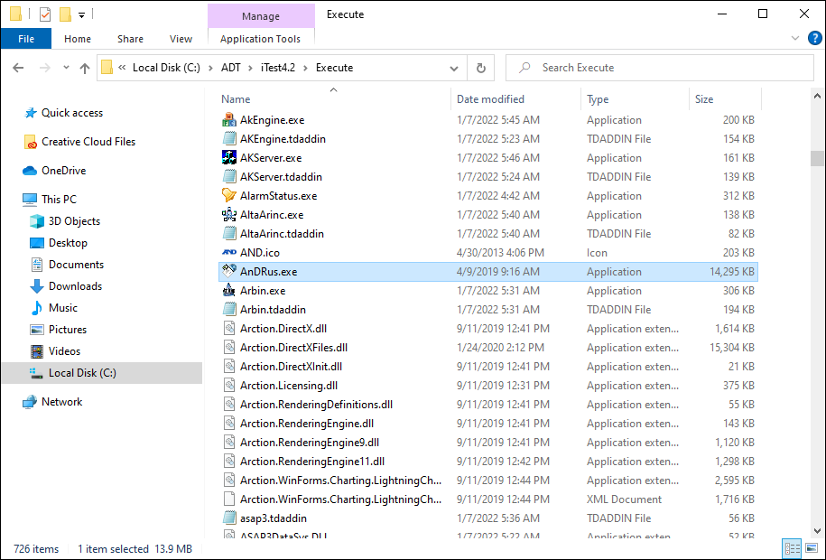
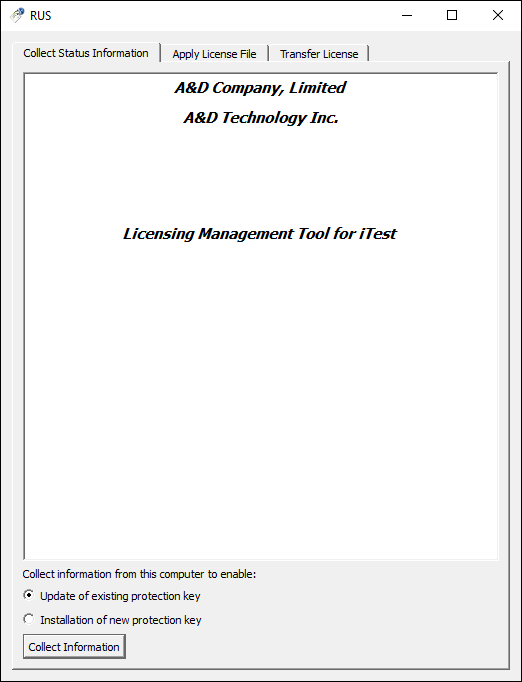
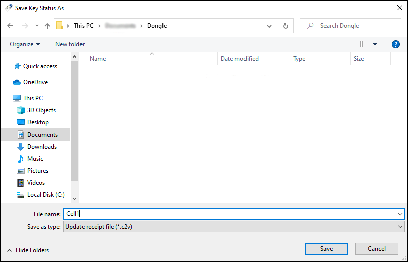
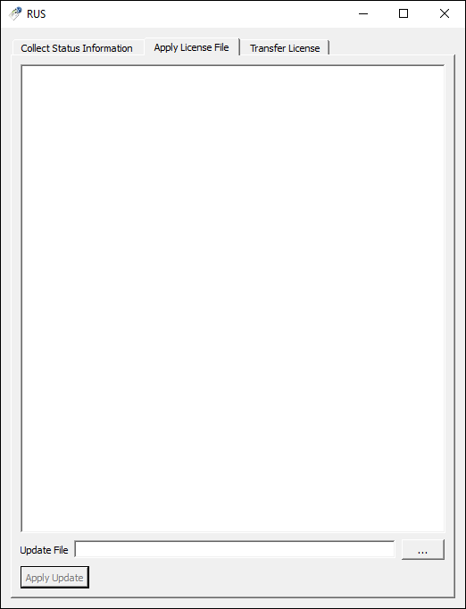
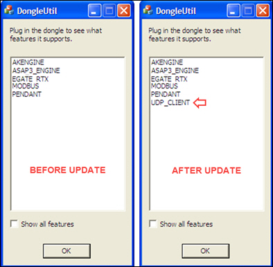

Updating a Dongle¶
This document describes how to update an iTest dongle by using the AnDRus license utility that comes with the iTest software. This utility will allow you to generate a .c2v file that is used by A&D to generate an update file for your licenses, and then push the update back to your dongle.
To view the current list of drivers on your dongle by using the Dongle Utility, see DongleUtil.
Definition of Terms¶
The following terms are used when describing the driver update process:
Definitions
| Term |
Definitions |
| Dongle |
A small hardware device that plugs into the a port. The dongle contains licensed driver information and data that is used to run iTest drivers. |
| .c2v file |
The file generated by the AnDRus utility that gets emailed to A&D for updating (customer to vendor). |
| .v2c file |
The updated file emailed back to the customer from A&D (vendor to customer). |
The Repair Process¶
The following procedure describes the process of generating a .c2v file to send to A&D and then updating the dongle with the .v2c file sent back from A&D.
Generate a .c2v File¶
- Using Windows Explorer, navigate to the Execute folder and locate the AnDRus.exe utility. Double-click the file to open it.
AnDRus.exe Location

- Click the Collect Information button on the opening screen to collect driver data from both iTest and LabMinder.
Collect Information

- At the Save Key Status As dialog, enter the filename and location for the .c2v file to be saved.
|
 |
NOTE: |
A&D recommends that you name the file after the cell that the new driver will be used in - especially when you have multiple cells. Each dongle has a unique serial number. |
Save Key As

- Click Save. The AnDRus utility will now collect the necessary information from the dongle and save the .c2v file to the location you specified. This process may take a few seconds to complete.
- Attach the completed .c2v file to a support request; support requests can be submitted using the customer portal at support.aanddtech.com. The file size will be small (between 15-20kb) and the .c2v extension will safely pass through any email server firewall. A&D will then modify the .c2v file by updating the enabled drivers list with any new licenses, and create a .v2c file that will get emailed back to you. Once you receive this file, save it to your machine in a location that is easy to find.
Apply the License Update to the Dongle¶
- Insert the dongle into an open USB port on the machine or laptop in the cell. Wait a few seconds while your computer discovers the dongle and prepares it for use.
- Navigate to the Execute folder again and double-click the AnDRus utility.
- Click the Apply License Update tab at the top of the screen.
Apply License File

- Click the button, and navigate to the location of the A&D-supplied .v2c file. Click Open. The details of the file will appear in the AnDRus display area.
- Click the Apply Update file. The AnDRus utility will now extract the contents from the .v2c file and update the driver list on the dongle with any new driver licenses (please allow several seconds for the dongle to upgrade completely). When the update is finished, you will see an “Update written successfully” message in the display area.
- Navigate to the Execute folder again and open the DongleUtil.exe file. This will verify that the new driver has been added to the dongle.
- Wait a few seconds while the dongle utility reads the dongle and then lists the drivers in the display area. As you can see from the screenshot below, our dongle now shows the UDP_CLIENT driver.
Updated Driver List

- You are now ready to use the new driver.